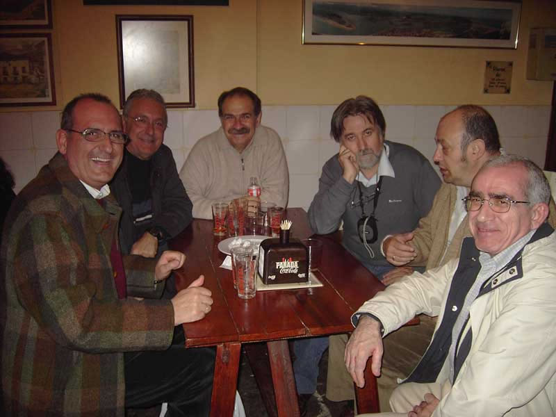

Encuentro en Santoña |
|
 Ea, pues de cena, nada, a seguir tomando cervezas. ¡¡¡Qué manías, oye!!! Por cierto, se acaba de incorporar al grupo, Carlos Pertíñez, por lo que la composición es la que sigue: Joaquín, Jesús Mari (Suso), Carlos, Manolo, Fernando y Jaime. Una observación para las mentes mal pensadas, Manolo no es que esté 'amorcillado', es que está ligeramente 'amorcillado'. |